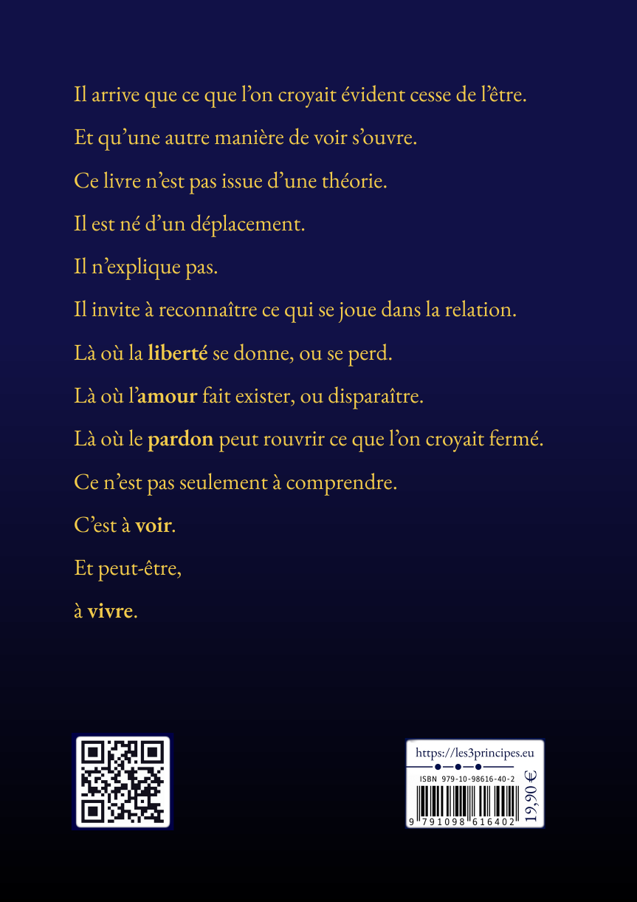

Le Livre

Il arrive que ce que l'on croyait évident cesse de l'être.
Et qu'une autre manière de voir s'ouvre.
Ce livre n'est pas issu d'une théorie.
Il est né d'un déplacement.
Il n'explique pas.
Il invite à reconnaître ce qui se joue dans la relation.
Là où la liberté se donne, ou se perd.
Là où l'amour fait exister, ou disparaître.
Là où le pardon peut rouvrir ce que l'on croyait fermé.
Ce n'est pas seulement à comprendre.
C'est à voir.
Et peut-être, à vivre.
Les informations ISBN et prix figurant sur cette couverture correspondent au premier tirage de l'ouvrage.
Les Trois Principes explore les conditions fondamentales de la relation humaine à partir d’une question simple : qu’est-ce qui rend une relation réellement vivante ?
En prenant appui sur l’expérience vécue, l’ouvrage met en lumière trois dimensions constitutives de toute relation véritable : la liberté, la capacité à aimer autrui et la capacité à pardonner.
Il propose un chemin de discernement destiné à mieux voir ce qui ouvre, ferme ou altère la relation, et élargit progressivement cette réflexion à l’expérience humaine, aux structures collectives et à certaines traditions de pensée.
Un ouvrage hors des formats habituels
Sans rompre avec les codes de l’essai, le livre adopte une construction singulière dont la forme participe elle-même à l’expérience de lecture.
Changements de registre, déplacements de perspective, niveaux de lecture, correspondances discrètes, articulation interne inhabituelle, progression par dévoilement : le texte laisse apparaître peu à peu qu’il obéit à une logique plus construite qu’il n’y paraît d’abord.
Certaines lignes ne prennent leur pleine portée qu’après coup. Certains agencements ne se révèlent qu’à mesure que la lecture avance. Et ce qui semblait d’abord relever de la forme peut finir par participer du fond lui-même.